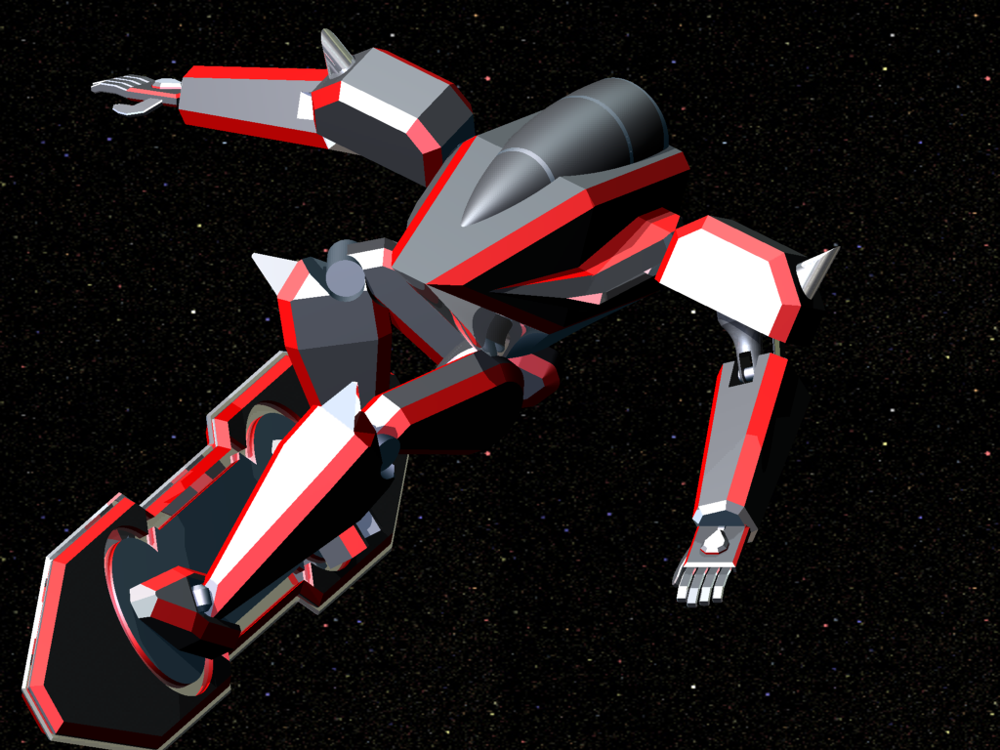

A brief intro to CADD and one of my early CADD project
CADD; Computer aided Drafting and Design

A brief intro to CADD and one of my early CADD project
CADD; Computer aided Drafting and Design
In high-school I designed a toy robot that was loosely based on this one, which is from a TV show called Eureka Seven. This particular robot was called the TypeR606 and it is what's known as a "LFO" which stands for "Light finding operation" and is a reference to a type of audio machine called a Low Frequency Oscillator. This name was also a reference to the fact that the robots used waves of transparent light particles as both a fuel source and a way to "surf" in the air with their boards.
In the show, these robots were piloted both by civilians and for military purposes and used these boards that they called Ref Boards for short range transportation. Ref Board was short for Reflection Boards and they essentially surfed on waves of light particles. I really liked the design of the robots so I wanted to see if I could make it in CADD as a proof of concept and it has become a passion project that slowly evolved into what it is now.
Before I get into how the LFO was created and the design process, a brief explanation of what CADD is and what it's used for is in order.
CADD, which stands for "Computer Aided Drafting and Design", is the name of the type of software that engineers use. There are a vast amount of softwares that range from educational to professional. This project, and my first CADD software, was done in Autodesk Inventor but there are many more types out there. The biggest breakthrough in the past few years has been 3D printing where a model is printed with heated plastic for a scale model of the model, these models can be used as prototypes or just as cool knick knacks to have around.
Grabcad, a popular library for CAD filesCADD software can be used for many different things, each part starts as just that, an individual part. You can then put all the parts together to make an assembly and can even add movement to the assemblies. The uses for CADD are vast and some may even be a bit surprising. With different CADD programs you can make:
- Individual parts like gears
- Full assemblies like a bicycle
- Game development
- Industry projects like cars and assembly robots
Just about everything has gone through the hands of an engineer at one point and has spent it's fair share of time in a CADD software. If you can think of it, then it was virtual at one point!
- Anything from small gears to large rocket engines can be made in a single software
- Toys and even boardgames have their start in CADD
- Full assemblies start as individual parts and are put together kind of like Lego
In high-school I designed a toy robot that was loosely based on this one, which is from a TV show called Eureka Seven. This particular robot was called the TypeR606 and it is what's known as a "LFO" which stood for "Light finding operation." This name was a reference to the fact that the robots used waves of transparent light waves as both a fuel source and a way to "surf" in the air with their boards.
In the show, these robots were piloted both by civilians and for military purposes and used these boards that they called Ref Boards for short range transportation. Ref Board was short for Reflection Boards and they essentially surfed on waves of light particles. I really liked the design of the robots so I wanted to see if I could make it in CADD as a proof of concept and it has become a passion project that slowly evolved into what it is now.
Before I get into how the LFO was created and the design process, a brief explanation of what CADD is and what it's used for is in order.
CADD, which stands for "Computer Aided Drafting and Design", is the name of the type of software that engineers use. There are a vast amount of softwares that range from educational to professional. This project, and my first CADD software, was done in Autodesk Inventor but there are many more types out there. The biggest breakthrough in the past few years has been 3D printing where a model is printed with heated plastic for a scale model of the model, these models can be used as prototypes or just as cool knick knacks to have around.
CADD software can be used for many different things, each part starts as just that, an individual part. You can then put all the parts together to make an assembly and can even add movement to the assemblies. The uses for CADD are vast and some may even be a bit surprising. With different CADD programs you can make:
- Individual parts like gears
- Full assemblies like a bicycle
- Game development
- Industry projects like cars and assembly robots
Just about everything has gone through the hands of an engineer at one point and has spent it's fair share of time in a CADD software. If you can think of it, then it was virtual at one point!
- Anything from small gears to large rocket engines can be made in a single software
- Toys and even boardgames have their start in CADD
- Full assemblies start as individual parts and are put together kind of like Lego
This was the final result of my first iteration of my LFO
I initially started this project to just see if I could actually do this and it quickly grew to one of the my favorite projects that I have worked on. The initial designs are nothing spectacular and have a lot wrong with them, but the fact I was able to pull it off was one of my proudest moments. One of the biggest problems I faced was getting the cockpit canopy to sit properly in the body of the robot. Eventually I settled with it sitting slightly off centered but it was under the body so it wasn't noticeable.
This was the final result of my first iteration of my LFO
I initially started this project to just see if I could actually do this and it quickly grew to one of the my favorite projects that I have worked on. The initial designs are nothing spectacular and have a lot wrong with them, but the fact I was able to pull it off was one of my proudest moments. One of the biggest problems I faced was getting the cockpit canopy to sit properly in the body of the robot. Eventually I settled with it sitting slightly off centered but it was under the body so it wasn't noticeable.